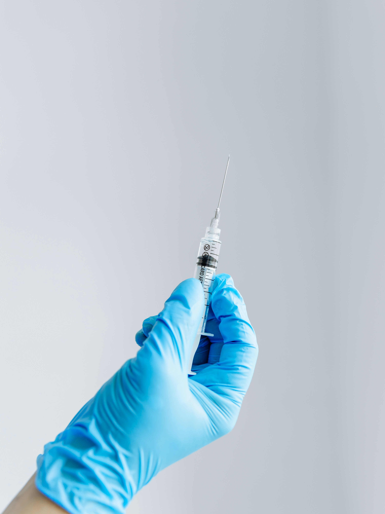

Vaccineren voor je reis
Om optimaal van je reis te kunnen genieten, is het belangrijk om ook aan je gezondheid te denken. In Thailand komen namelijk infectieziekten voor die in Nederland minder vaak voorkomen. Met de juiste vaccinaties en voorzorgsmaatregelen kun je de kans om ziek te worden verkleinen.
Welke vaccinaties heb ik nodig?
Voor reizigers uit Nederland zijn er twee vaccinaties die in het algemeen worden aanbevolen voor een reis naar Thailand: DTP en hepatitis A. Daarnaast kunnen, afhankelijk van je reisplannen, aanvullende vaccinaties verstandig zijn. Welke vaccinaties je precies nodig hebt, hangt onder andere af van de duur van je verblijf, de gebieden die je bezoekt en je eerdere vaccinaties.
Aanbevolen vaccinaties
-
DTP (difterie, tetanus en polio)
Deze vaccinatie beschermt tegen drie infectieziekten die ernstige gezondheidsproblemen kunnen veroorzaken. -
Hepatitis A
Hepatitis A is een besmettelijke leverontsteking die je kunt oplopen via besmet voedsel of drinkwater.
Aanvullende vaccinaties
-
Hepatitis B
Beschermt tegen een virus dat de lever aantast en via bloed of bepaalde lichaamsvloeistoffen kan worden overgedragen. -
Rabiës (hondsdolheid)
Kan relevant zijn wanneer je veel in contact komt met dieren of naar afgelegen gebieden reist waar medische hulp minder snel beschikbaar is. -
Japanse encefalitis
Kan worden overwogen bij een langer verblijf, vooral wanneer je veel tijd doorbrengt op het Thaise platteland. -
BMR (bof, mazelen en rodehond)
Controleer of je basisvaccinaties compleet zijn, met name je bescherming tegen mazelen.
Zijn vaccinaties verplicht?
Als je rechtstreeks vanuit Nederland naar Thailand reist, zijn er doorgaans geen verplichte vaccinaties. Een uitzondering kan gelden voor gele koorts: wanneer je vanuit een land met gelekoortsrisico reist, of onder bepaalde omstandigheden een lange overstap in zo'n land hebt, kan een vaccinatiebewijs verplicht zijn. Controleer daarom altijd je volledige reisroute. Maak bij voorkeur zes tot acht weken voor vertrek een afspraak bij de GGD of een reizigersvaccinatiebureau. Neem je vaccinatieboekje mee, zodat gecontroleerd kan worden welke vaccinaties je al hebt gehad.
